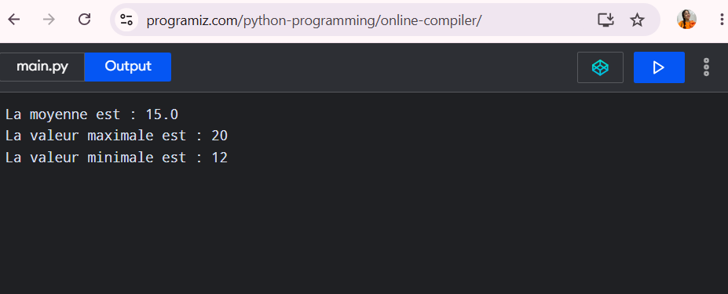
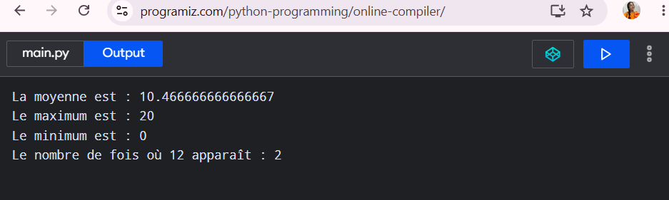
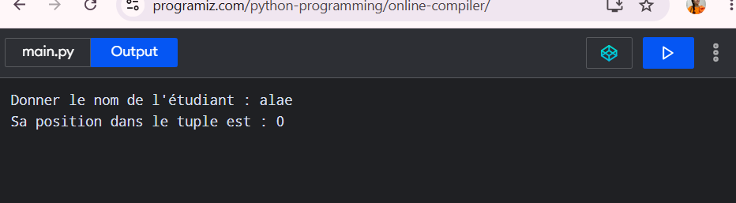

Python
Voici trois mini-projets que j'ai réalisés en Python.
Projet 1 : moyenne, maximum et minimum avec des boucles
Le problème
Calculer la moyenne, la note la plus haute et la note la plus basse d'un tuple de notes, sans utiliser les fonctions toutes prêtes de Python.
Le code
t = (12, 15, 12, 16, 20, 15)
# Moyenne
s = 0
for i in t:
s = s + i
moy = s / len(t)
print("La moyenne est :", moy)
# Valeur maximale
vmax = t[0]
for i in t:
if i > vmax:
vmax = i
print("La valeur maximale est :", vmax)
# Valeur minimale
vmin = t[0]
for i in t:
if i < vmin:
vmin = i
print("La valeur minimale est :", vmin)Comment ça marche
La boucle parcourt chaque note et l'ajoute à la somme s. Ensuite, je divise la somme par le nombre de notes, len(t). Pour le maximum, je pars de la première note, puis je compare chaque note : si elle est plus grande, je la garde. Le minimum fonctionne de la même façon.
Résultat

Difficultés rencontrées et solutions
- Je divisais par 15 alors que le tuple contient 6 notes, donc la moyenne était fausse. Solution : utiliser
len(t). - Le calcul de la moyenne était dans la boucle. Je l'ai mis après la boucle.
- J'avais appelé mes variables
maxetmin, qui sont des fonctions de Python. Je les ai renomméesvmaxetvmin.
Projet 2 : statistiques avec les fonctions de Python
Le problème
Pour une liste de 15 notes, calculer la moyenne, le maximum, le minimum et compter combien de fois la note 12 apparaît.
Le code
L = [12, 15, 4, 0, 8, 10, 15, 17, 18, 19, 20, 12, 4, 1, 2]
somme = 0
for i in range(len(L)):
somme = somme + L[i]
moyenne = somme / len(L)
maximum = max(L)
minimum = min(L)
nb = L.count(12)
print("La moyenne est :", moyenne)
print("Le maximum est :", maximum)
print("Le minimum est :", minimum)
print("Le nombre de fois où 12 apparaît :", nb)Comment ça marche
Je calcule la somme avec une boucle, puis la moyenne. Pour le reste, j'utilise les fonctions de Python : max(), min() et count(). Le code est beaucoup plus court que dans le projet 1.
Résultat

Difficultés rencontrées et solutions
- Les noms de mes variables étaient inversés :
moycontenait la somme etsumla moyenne. Je les ai renomméessommeetmoyenne. - J'avais écrit
range(0,15). Avecrange(len(L)), le programme marche même si j'ajoute des notes.
Projet 3 : rechercher un étudiant
Le problème
L'utilisateur tape un nom. Le programme dit si cet étudiant existe et donne sa position dans le tuple.
Le code
nom = ("alae", "sara", "mabrouka", "yessin", "aziz", "mariem", "hiba", "jed", "hasna")
name = input("Donner le nom de l'étudiant : ")
if name in nom:
i = 0
while i < len(nom):
if nom[i] == name:
break
else:
i = i + 1
print("Sa position dans le tuple est :", i)
else:
print("Le nom n'existe pas.")Comment ça marche
D'abord, in vérifie si le nom existe dans le tuple. Ensuite, la boucle while avance case par case jusqu'à trouver le nom, et break arrête la boucle. Attention : la position commence à 0, donc « alae » est à la position 0.
Résultat

Difficultés rencontrées et solutions
- Deux noms avaient un espace caché au début (" mariem"), donc le programme disait qu'ils n'existaient pas. J'ai supprimé les espaces.
- Ma condition était
i <= len(nom), ce qui peut chercher une case qui n'existe pas. Je l'ai remplacée pari < len(nom).
Transparence IA
Outils utilisés : Programiz (pour exécuter le code), Claude.
Rôle de l'IA : Claude a testé mes programmes, m'a expliqué mes erreurs et m'a aidée à mettre la page en forme.
Ce que j'ai fait moi-même : j'ai écrit les trois programmes, j'ai compris et appliqué les corrections, j'ai exécuté les programmes et fait les captures d'écran.
Sources vérifiées : mon cours de Python (ISET Nabeul).